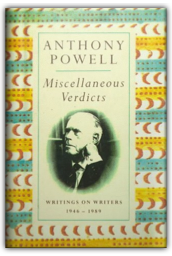
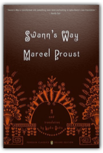
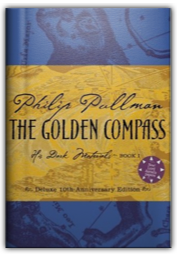
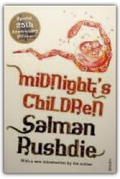

|

Miscellaneous Verdicts: Writings on Writers
Anthony Powell

Miscellaneous Verdicts represents the best of Anthony Powell's critical writing over a period of four decades. Drawn from his regular reviews for the Daily Telegraph, from his occasional humorous pieces for Punch, and from his more sustained pieces of critical and anecdotal writing on writers, this collection is as witty, fresh, surprising, and entertaining as one would expect from the author of Dance to the Music of Time.
A Dance to the Music of Time: Fourth Movement
Anthony Powell
Anthony Powell's universally acclaimed epic encompasses a four-volume panorama of twentieth century London. Hailed by Time as "brilliant literary comedy as well as a brilliant sketch of the times," A Dance to the Music of Time opens just after World War I. Amid the fever of the 1920s and the first chill of the 1930s, Nick Jenkins and his friends confront sex, society, business, and art. In the second volume they move to London in a whirl of marriage and adulteries, fashions and frivolities, personal triumphs and failures. These books "provide an unsurpassed picture, at once gay and melancholy, of social and artistic life in Britain between the wars" (Arthur Schlesinger, Jr.). The third volume follows Nick into army life and evokes London during the blitz. In the climactic final volume, England has won the war and must now count the losses.
Anthony Powell: Journals 1990-1992
Anthony Powell
Third in a series of journals, this book includes the author's memories of Evelyn Waugh, Philip Larkin, John Betjamin, Kingsley Amis, and Marlene Dietrich.

Swann's Way: In Search of Lost Time, Vol. 1
Marcel Proust, Lydia Davis
Marcel Proust’s In Search of Lost Time is one of the most entertaining reading experiences in any language and arguably the finest novel of the twentieth century. But since its original prewar translation there has been no completely new version in English. Now, Penguin Classics brings Proust’s masterpiece to new audiences throughout the world, beginning with Lydia Davis’s internationally acclaimed translation of the first volume, Swann’s Way.

The Golden Compass, Deluxe 10th Anniversary Edition
Philip Pullman
Published in 40 countries, Philip Pullman's His Dark Materials trilogy—The Golden Compass, The Subtle Knife, and The Amber Spyglass—has graced the New York Times, Wall Street Journal, San Francisco Chronicle, Book Sense, and Publishers Weekly bestseller lists. In 1996, The Golden Compass changed the face of fantasy publishing, and 2006 marks its 10 Year Anniversary—and an opportunity to celebrate with a deluxe hardcover. Pullman created new material just for this edition (archival documents, scientific notes and "found" letters of Lord Asriel) which has been illustrated and handlettered by renowned British artist Ian Beck and will be included in the back matter. The deluxe edition also features Pullman's own chapter opening spot art. A quality collectible—with the enticement of never-before-seen new material—for Pullman fans.
The Case of the Pope: Vatican Accountability for Human Rights Abuse
Geoffrey Robertson
"The Case of the Pope" delivers a devastating indictment of the way the Vatican has run a secret legal system that shields paedophile priests from criminal trial around the world. Is the Pope morally or legally responsible for the negligence that has allowed so many terrible crimes to go unpunished? And, should he and his seat of power, the Holy See, continue to enjoy an immunity that places them above the law? Geoffrey Robertson QC, a distinguished human rights lawyer and judge, evinces a deep respect for the good works of Catholics and their church. But, he argues, unless Pope Benedict XVI can divest himself of the beguilements of statehood and devotion to obsolescent canon law, the Vatican will remain a serious enemy to the advance of human rights.
Portnoy's Complaint
Philip Roth
The famous confession of Alexander Portnoy who is thrust through life by his unappeasable sexuality, yet held back at the same time by the iron grip of his unforgettable childhood.

Midnight's Children
Salman Rushdie
Saleem Sinai was born at midnight, the midnight of India's independence, and found himself mysteriously 'handcuffed to history' by the coincidence. He is one of 1,001 children born at the midnight hour, each of them endowed with an extraordinary talent - and whose privilege and curse it is to be both master and victims of their times. Through Saleem's gifts - inner ear and wildly sensitive sense of smell - we are drawn into a fascinating family saga set against the vast, colourful background of the India of the 20th century. |
 Made with Delicious Library
Made with Delicious Library
Springfield, VA zipflap congrotus delicious library Fogus, Michael